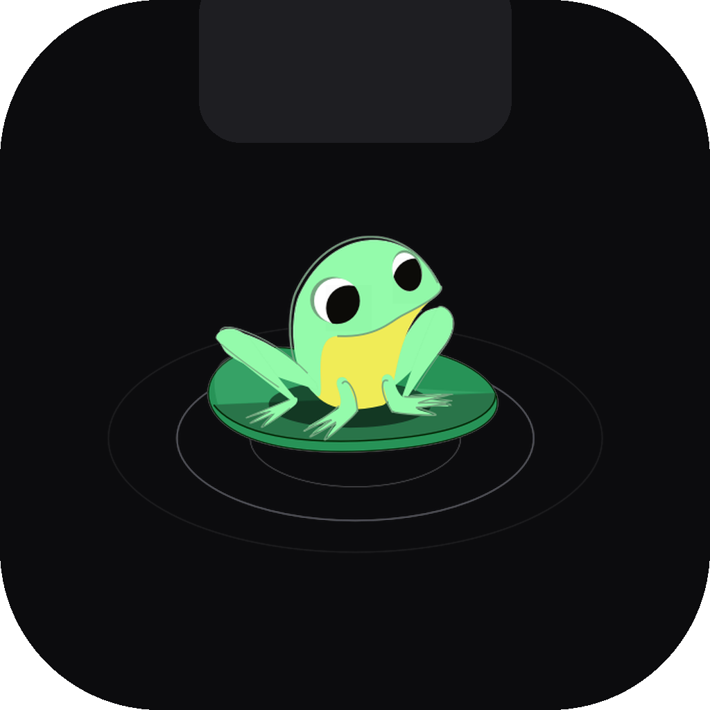

Ledge Free · macOS 14 or later · Apple siliconA free menu-bar app. Every few minutes a character drops by the notch and goes about its business. Click the notch whenever you want another one. Silent, offline, and out of your way.
The black shape is the app. It sits over the hardware notch and opens only while something is happening.
The characters are the work of animators in the LottieFiles community, played back frame by frame in the notch. The roster grows with every release.
Three steps. The second one is there because the app isn't notarized with Apple, which costs a developer subscription this free project doesn't have.
🐌 in the menu bar holds Play a clip, Launch at Login and Quit.